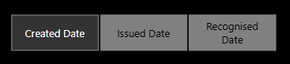
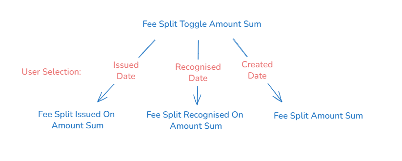
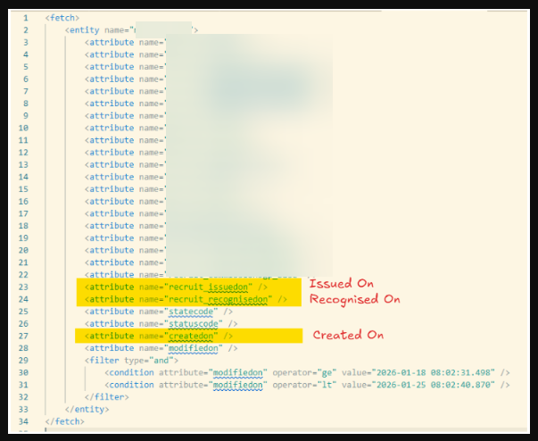
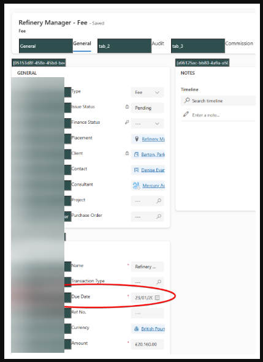
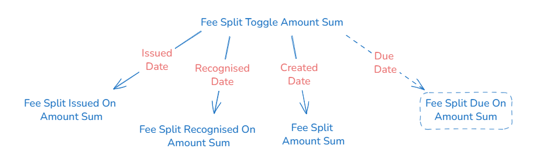

Context
We have a Financial Overview report which allows the user to view fee amounts in one of three ways: by created date, by issued date or by recognised date.
A question was raised during customer feedback regarding whether it would be possible to add a 4th option and be able to view by due date.
In addition, rather than have this as a fourth option in the existing button slicer, could this be converted to a dropdown slicer and added to the existing filters at the top of the report?
Below is a write-up of the investigation carried out:
Executive Summary
This analysis concludes that we could add a 4th option to the existing selection of available fee related dates.
Furthermore this can be converted from a button slicer to a drop down slicer and added to the Advanced Filter panel.
However there is something to be aware of if implementing this: This slicer only works in the existing pages of the Financial Overview report (Trends and Breakdowns) and would be redundant in a) the other pages of this report (Splits and Financial Transactions) and b) in any other report.
1. Existing Infrastructure
1.1 User Interface
We currently have a button slicer labelled with three options:

A new two-column table has been manually created in Power Query called FeeDateRelationship from which these inputs originate.
When a user selects an option, the visuals and cards alter. These Power BI artefacts are dependent on 4 "control flow" measures:
- Fee Split Toggle Amount Sum
- Fee Split Toggle Amount Average
- Fee Split Toggle Placement or Vacancy Fee Percentage
- Fee Split Toggle Amount Cumulative Sum
These measures react to the choice made and run a subsequent measure. The measure which is ultimately run depends on the user selection made in the button slicer.
There are therefore three different varieties (one each depending on what was selected between created date, issued date or recognised date) of the 4 subsequent measures in the following pattern:

1.2 Back End
The source data comes from the Fee table in dataverse. The following FetchXML shows that we currently grab the created on date, the issued on date and the recognised on date.

This data is then loaded into Staging.Fee and then transformed in the datawarehouse using a stored procedure to become the FctFeeSplit table.
2. Suggested Approach
In order to achieve the ask, we need to do the following things:
- Add the relevant date field from the source system into the FetchXML query to bring the column into Staging.Fee

An extract from Dataverse with the field required highlighted - Update the stored procedure to add this new field into the FctFeeSplit table (and consequently the SQL view).
- In Power BI, we need to add a row in Power Query to the FeeDateRelationship table.
- And then create the new "Fee Split Due On" measures.
- And update the Fee Split Toggle measures that sit above these to allow "Due Date" to be an option.
- Then the object on the user interface can be changed from a button slicer to a dropdown slicer with four options and added to the Advanced panel.
So each of the 4 control flow measures will end up looking like this:

3. Caveats
No Modelling Relationship
Firstly this is not and never shall be a dimension table filtering the related fact table. That pattern works by allowing the user to filter a column in the dimension table and then this selection to subsequently filter the fact table records via the relationship between the dimension and the fact.
This is how the other slicers in the filter panel work. And it works because each record in the fact table has one discipline, one consultant or one currency assigned to it. So if the user filters to a specific currency, the relationship ensures only fact records with that currency are returned.
This can't work like that because this is about frames of reference rather than filtering fact records into a subgroup based on a category selection. The record is the same in each case, we're just deciding through which time lens we wish to view it. Every record has multiple dates (issued on, recognised on, created on and due on) so creating a dimension column to filter doesn't work.
So the FeeDateRelationship table has no relationship with the fact table and instead we use DAX to artificially create a relationship during the calculation.
Practical Consequences
What this means in practice is that this 'slicer' will only work on visuals that use these measures i.e. specifically the Trends page and the Breakdowns page of the Financial Overview report.
If we wanted to implement elsewhere, additional effort and thought would be required as we would need to re-write measures. And context changes like this can have unexpected downstream consequences.
4. Effort Required
As per above, both SQL work and Power BI work needs to be done to achieve this.
4.1 SQL Changes
A new column needs to be added into:
- the extraction from the source system.
- the stored procedure to convert staging data to the fact table.
- the SQL view which goes over the fact table.
4.2 Power BI Changes
The following due date measures will need to be created:
- Fee Split Due On Amount Average
- Fee Split Due On Amount Sum
- Fee Split Due On Amount Cumulative
- Fee Split Placement or Vacancy Fee Percentage Amount
The following measures need to be extended to include one each of the above due date measures:
- Fee Split Toggle Amount Sum
- Fee Split Toggle Amount Average
- Fee Split Toggle Placement or Vacancy Fee Percentage
- Fee Split Toggle Amount Cumulative Sum
5. Recommendation
Assuming the scope of this change is limited to the Financial Overview report and the pages on which it already exists and we accept this is a context-switching slicer rather than a true filter, I would recommend we implement the changes as discussed above.
What Happened Next?
The team went ahead with this change as described.